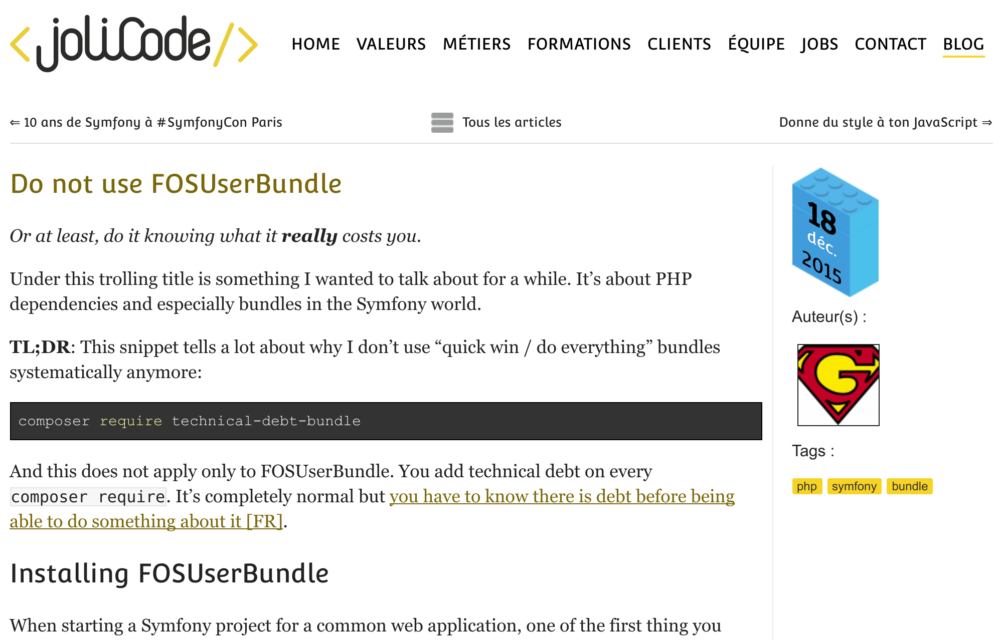
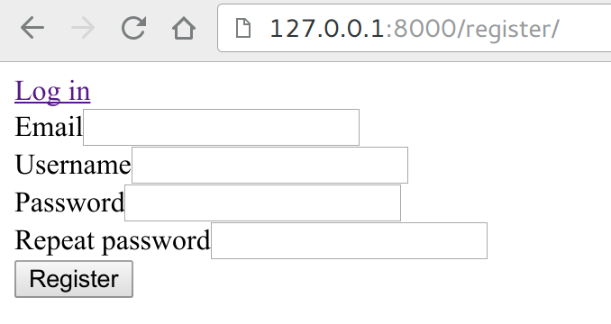
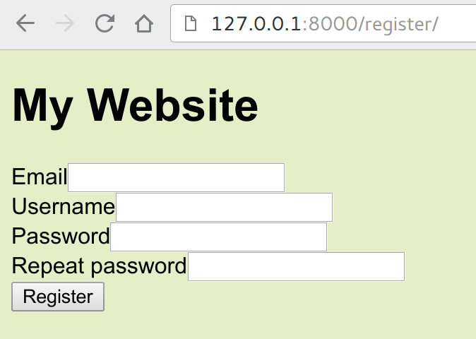
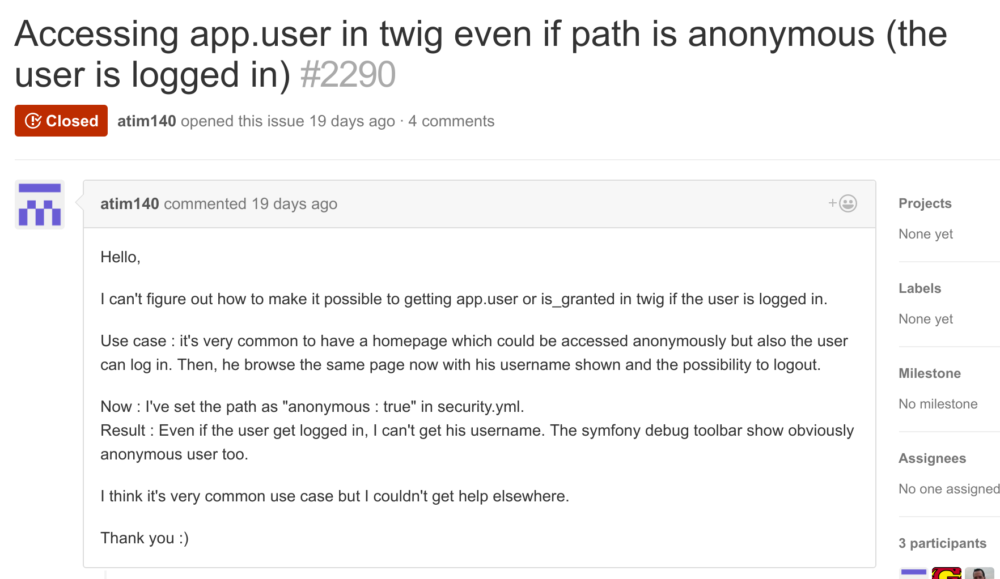

Do not use FOSUserBundle
Or what to consider before using it
Our journey
- What is FOSUserBundle
- Why it's not the right fit for a professional project
- Implementing your own User Manager
- Choosing a Bundle, the Right Way ©
Hi there! 👋
- @damienalexandre 🇫🇷
- Symfony consultant since 2008
- Contributor, writer, speaker
- Elasticsearch 🔎 and Unicode enthusiast
- Beer 🍺 and Bike 🚲, not in that order
- First time public speaking in English 🇬🇧

I'm a consultant
I do audits, developments, trainings in Paris

We build web and mobile apps for awesome clients.
It all started with a new project
- Install Symfony and FOSUserBundle 🚀
- Client wants some modifications
- Tweak the bundle
- Hack the bundle
- Rewrite part of the bundle
- "What the hell did I do" 😥
One year ago
I had to let it go:
Was ist FOSUserBundle?
A bit of history
- May, 2010: Original idea and first implementation by KNPLabs 🎉
- Was called DoctrineUserBundle in reference to our good old sfDoctrineGuardPlugin 👴
- December 2010: it was moved to FriendOfSymfony
- FOS was born!
A bit of history
By then you had to use Git Submodule to install bundles:
git submodule add \
git://github.com/knplabs/DoctrineUserBundle.git \
src/Bundle/DoctrineUserBundle😨
Symfony 2 release
July 2011: Version 1.0 was tagged,
1 month after Symfony 2.0 release.
Yes we had a deps file 😬
[FOSUserBundle]
git=git://github.com/FriendsOfSymfony/FOSUserBundle.git
target=bundles/FOS/UserBundle- 👪 333 contributors
- 🏷 18 releases
- 📂 5 700 000 downloads
- 📒 Documentation available on Symfony.com
- 👍 Recommended on the official documentation
- 🏅 Most popular on KnpBundles
- 📝 ~5000 lines of code (NCLOC: excluding the tests and comments)
All the features
- Provide stored User object for Symfony projects:
- Doctrine ORM
- Doctrine ODM
- Propel (may be removed in 2.0)
- Registration form with optional confirmation email
- Profile editing form
- Password reset form and handling
- Console commands for users management
What is not in FOSUser
- Authentication (Form login, basic, LDAP...)
- Authorisation (Access controls...)
- Session management
- Remember Me
- Impersonate User
- Doctrine User Provider...
Two versions
- 1.3.6: latest stable version
- Not compatible with Symfony 3
- 54k monthly downloads [source]
- 2.0.0-alpha3: released 1 year ago
- Major update, lots of BC Break
- 24k monthly downloads
dev-master has 135k monthly downloads 😱
Why you
should not
use it 🙊
It's an implementation, not a framework
- Some choices are done for the greater good
- Not everything will work for you
- You will spend a lot of time bending the implementation to your needs
- This will cause some pain
Pain #1: Username and email as identity
- Login form uses username by default 👤
- Both email and username are unique, so email is also valid as identity ☑
- Most professional websites use email as login
- You can't really switch to emails only 😥
Pain #1: Username and email as identity
Two user provider to chose from:
fos_user.user_provider.usernamefos_user.user_provider.username_email- PR in progress for an email only provider
Pain #1: Username and email as identity
- Symfony refer to username everywhere:
UserProviderInterface::loadUserByUsernameUserInterface::getUsername
- It really mean "identity", and may change in the future...
- It's ok to have
getUsernamereturn an email - But removing the username field is not possible, you have to hack!
Pain #1: Bye Username
- Hack the entity setter:
public function setEmail($email) { $email = is_null($email) ? '' : $email; parent::setEmail($email); $this->setUsername($email); return $this; } -
Remove the field from the FormType:
public function buildForm(FormBuilder $builder, array $options) { parent::buildForm($builder, $options); $builder->remove('username'); }
Pain #1: Bye Username
- Completely rewrite the validation constraints and implement new validation groups
- Switch the user provider to email OR username
- Full instructions here
- The username field is still in the database 😡
Pain #1: username_email provider is a hack ⚠
public function findUserByUsernameOrEmail($usernameOrEmail)
{
if (preg_match('/^.+\@\S+\.\S+$/', $usernameOrEmail)) {
return $this->findUserByEmail($usernameOrEmail);
}
return $this->findUserByUsername($usernameOrEmail);
}Creative usernames will never be found:
[@lpha.org], 𝜋 @3.14...
Pain #2: Database
The default table is full of fields you may never use
and 🚫 cannot be removed 🚫
usernameandusername_canonicalemail_canonical⚠salt, not needed since bcrypt (UserInterface)last_login, why should I want that?rolesis(DC2Type:array), no interoperability
Pain #2: Database
- AdvancedUserInterface is implemented 🙌
lockedexpiredexpires_atcredentials_expiredcredentials_expire_at
- Doctrine's AttributeOverrides may allow to edit some fields options, but no removing or type switching.
Pain #3: Wording
Obviously default template must be customized 🎨
Pain #3: Wording
- Setting your own layout:
app/Resources/FOSUserBundle/views/layout.html.twig - Special block fos_user_content:
{% extends "::base.html.twig" %} {% block body %} {% block fos_user_content %}{% endblock fos_user_content %} {{ parent() }} {% endblock body %} - You HAVE to display flash messages
Pain #3: Wording
Pain #3: Wording
The user has been created successfully
😐 🤔
Pain #3: Wording
- Good: All the texts are provided and translated in 40 languages 🌍 thanks to awesome contributors 👍
- Bad: Messages are very generics, so you still have some translation work to do ✍
Pain #3: Wording
app/Resources/translations/FOSUserBundle.en.yml
registration:
flash:
user_created: >
Your account has been created successfully,
congratulation!Pain #3: Wording
- Emails are Twig files with translations,
and only the txt part is provided - The Mailer use Twig blocks to get the subject, text and html body parts
- There is a MailerInterface, because the default one is opinionated
- I often build a custom FOSUser Mailer as bridge to my real application Mailer 👍
Pain #4: Extendability
- Adding a field to the user profile is easy, it's your entity:
/** * @var \DateTime * @ORM\Column(name="birth_date", type="date") * @Assert\LessThan("-13 years", groups={"Registration", "Profile"}) */ protected $birthDate; - DO NOT forget the validation groups if you need validation
- What about form types then?
Pain #4: Extendability
class RegistrationType extends AbstractType
{
public function buildForm(FormBuilderInterface $builder, array $options)
{
$builder->add('birthDate');
}
// Extends the bundle form type
public function getParent()
{
return RegistrationFormType::class;
}
}Pain #4: Extendability
fos_user:
...
registration:
form:
type: "AppBundle\Form\RegistrationType"
To do for both the registration and profile types 😓
File madness 🚨
app/Resources
├── FOSUserBundle
│ └── views
│ ├── Registration
│ │ ├── email.txt.twig
│ │ ├── confirmed.html.twig
│ │ ├── check_email.html.twig
│ │ └── register_content.html.twig
│ ├── Resetting
│ │ ├── check_email.html.twig
│ │ ├── request.html.twig
│ │ └── reset.html.twig
│ └── Security
│ └── login.html.twig
└── translations
├── FOSUserBundle.en.yml
└── validators.en.yml
src/
└── AppBundle
├── Form
│ ├── RegistrationType.php
│ └── ProfileType.php
└── Manager
└── FOSUserEmail.php
So much files and overwriting
Very soon in your projects, you will note that
you are building a lot on top of the Bundle,
increasing your dependency on it.
That's called Technical Debt.
Why not drop the bundle and write them anyway? 🤔
🥖 Bonus pain 🥖
Separated User entities
- You need a Customer entity and an Admin entity?
- Install PUGXMultiUserBundle (ORM only), a Bundle that extends FOSUserBundle!
- 🚨 At your own risks 🚨
Separated Login Forms
- Custom login form for backend and customer access?
- custom routes for everything
- a new firewall and new
access_controlentries - a new
SecurityControllerextending the bundle one, with some conditions to know what template to render 🙈 - and of course the new template
Why you shouldn't use it
- Technical dept generator if you need customisation
- Hard to adapt, lots of file to write
- Hardly maintained 😧
- Makes visible your usage of Symfony + FOSUserBundle, which can be a security concern 🕵
inurl:"/resetting/request" "Username or email address"
Why we need it!
- Symfony Security is hard to learn 🔐
- It enable a WOW effect for new developers 😃
- Still a great piece of software if you stay in the lines 😍
Why we need it!
- This is the most used third party bundle 📈
- It's the entry point of a lot of new users,
the user base that does not know Symfony very well 👶
Maybe we should do better for the sake of Symfony? FOSUserBundle should be helpful, not scary.
Hardly maintained 😰
Issue overflow: everyone ask questions about the Symfony Security here, thinking Security is FOSUser concern:
Hardly maintained 😰
Hardly maintained 😰
- Slowed down by it's own popularity 🙉
- Also, no strong labels management, no triage like FOSRest or FOSHttpCache 🗃
📆 Hack Day 📆
- What are you doing this Saturday?
- Let's try to help the most used Bundle. Let's try to help newcomers.
- That's some serious "DX" (Developer eXperience) task!
Building your own 💪
Building your own
- Your own entities, no fuss, no extra fields
- Your own mailer from the start
- 100% flexibility, 100% integrated to your code base
- Some code to write:
- Your forms for register / profile and password reset
- The appropriate controllers
- The User Manager itself to create / persist, send emails, etc.
The User Entity
There is a cookbook for that
- Create your User entity, implement UserInterface
- Configure Security to load from your Entity,
that's part of Symfony
The Registration form
There is a cookbook for that
- Create a Form for the Entity
- Handle the Form Submission in a custom controller, where you have to encode the password
- Write a template
Building your own
That's basic Symfony development. Same for password reset, profile edit...
Just some decisions to make based on your needs and environment 👇 👈 👉
Like, do you need canonical fields?
Canonical fields
- FOSUserBundle adds canonical versions of all the username and email fields
mb_convert_case($string, MB_CASE_LOWER);- This allow to make sure we can't have two accounts with the same email:
foobar@example.orgFoOBAR@example.org
Canonical fields
- Do you know what an SQL collation is for?
… COLLATE utf8mb4_unicode_ci ENGINE = InnoDB;- It tells how to sort the data in your table, to make sure "A" and "a" are before "Z" dans "z"... which may not be the case in binary order
With a proper collation
â = Ä = A = a
🤘
Canonical fields
It works for SELECT:
SELECT 'föoBAR@example.org' COLLATE UTF8_GENERAL_CI
= 'foobar@example.org' COLLATE UTF8_GENERAL_CI;
=> 1
Canonical fields
It also works with UNIQUE KEY:
CREATE TABLE `test` (
`username` varchar(180) COLLATE utf8mb4_unicode_ci,
UNIQUE KEY `uniqueindextest` (`username`)
) ENGINE=InnoDB DEFAULT
CHARSET=utf8mb4 COLLATE=utf8mb4_unicode_ci;
INSERT INTO `test` (username) VALUES
('FOOBAR@example.org'), ('foobär@example.org');
=> Duplicate entry 'foobär@example.org'
=> for key 'uniqueindextest'
You do not need Canonical fields
👋
Choosing a bundle
The right way ©
Where to look
- http://symfohub.com/ is dead 😭
- KNPBundles.com is ok but not up to date 😐
- Packagist.org is the best source! 😍
- Add
&type=symfony-bundleto filter only the Symfony Bundle!
- Add
Do not use Composer to install
😅 jQuery 😅
Please
What to check
- Is it maintained? Can I contribute? Bus factor?
- Is there any tests? Are they green?
- Is there recent a stable version?
- Is there a reasonable amount of issues?
- What are the dependencies? What are the dependencies of the dependencies?!
Almost 8200 bundles to choose from
- Never install a bundle you do not trust 100%
- What does it do and how easily can it be changed?
- Is there a complete documentation?
- Look at the issue tracker for long pending issues
- Does it add a real feature to Symfony, or is it just a library?
Implementation Bundles
- FOSUserBundle is an User Management implementation
- You can use it if it fits your needs well
- Otherwise you add a burden on your project, in term of maintenance and quality
- You do not want a 5000+ lines of code Bundle to only use some parts of it
Wrapper Bundles
- Wrapper around a perfectly fine PHP library
- The library moves faster than the bundle, and you have to update things manually
- In some cases the Symfony Bundle adds constraints on top of the Library, like FOSElasticaBundle:
- FOSElasticaBundle adds Configuration constraint for the Elasticsearch mapping
- This has nothing to do with Elastica
- Elasticsearch mapping move faster than the bundle
3rd party Bundles
- Keep your number of Bundle as low as possible ⬇
- Prefer libraries over Bundles 💎 💍
- Stay awesome 💗
🌯 Wrap up 🌯
- FOSUserBundle is a great tool for beginners, but it's an opinionated implementation, and should not be used on professional applications:
- Too much code to write on top of it for customisation
- Makes maintenance and updates harder
- Maintainers can use some help answering issues, let's join on Saturday 👍
🌯 Wrap up 🌯
- Building your own User Management system is easy
- Third party bundles are good for quick win, but think about the long term consequences
- Each Bundle you install is long term engagement 🚧
Thanks to all FOSUserBundle contributors
I'm done ✌
Throw your questions at me!
❤ Did I told you I love emoji? 🦄
@damienalexandre